VideoSorter
Smart Video Organizer
Automatically Sort Your Videos by Schedule
Set rules based on weekday, time, date, and duration — VideoSorter reads your photo library and organizes lecture recordings into folders automatically. Perfect for students and teachers.
Define rules by weekday, time range, date range, and duration. Videos matching your criteria are automatically sorted into the right folders.
Create custom folders and manually pick which videos go where. Full control when you need it.
Reads video metadata (creation date, duration) directly from your photo library. No importing or duplicating files needed.
Available in 6 languages: English, Japanese, Korean, Simplified Chinese, Traditional Chinese, and Spanish.
All processing happens on your device. No video data is ever uploaded. The app only reads metadata — your videos stay private.
Watch and manage your sorted videos directly within the app. No need to switch between apps.
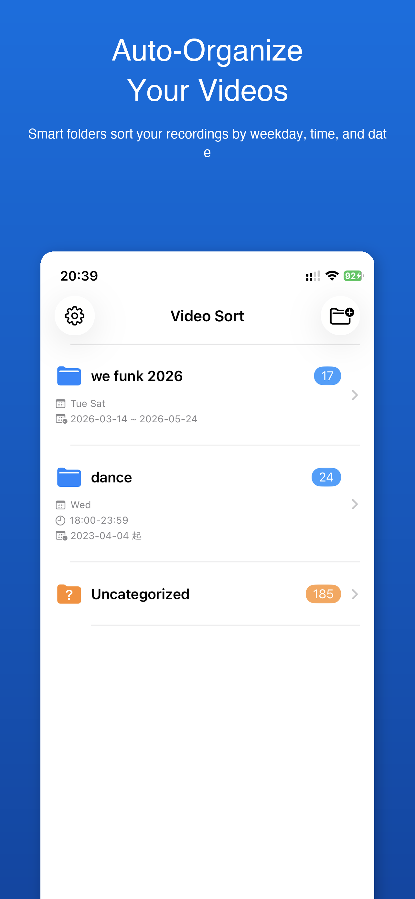
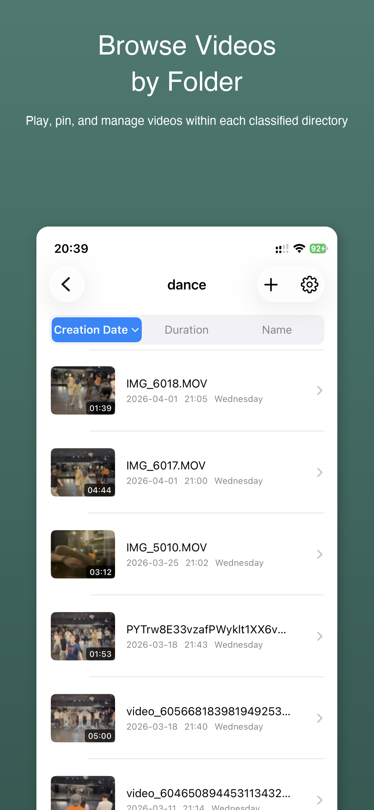
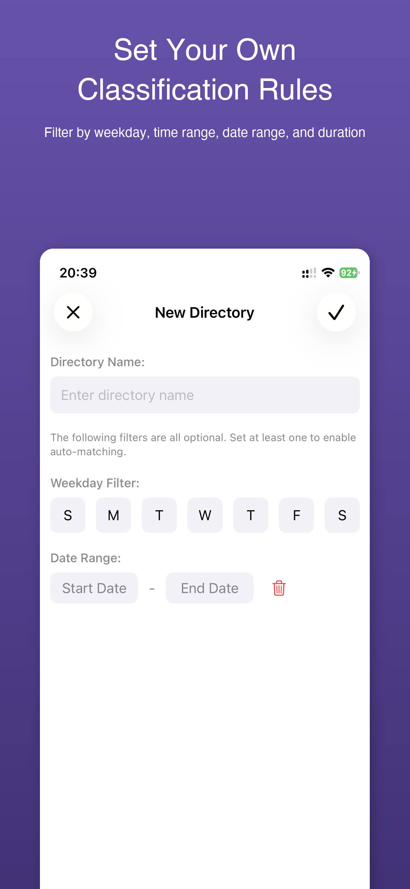
スケジュールに合わせて動画を自動分類
曜日・時間帯・日付範囲・動画の長さでルールを設定するだけ。フォトライブラリから講義録画を自動でフォルダに振り分けます。学生や教師に最適です。
曜日・時間帯・日付範囲・動画の長さでルールを定義。条件に合った動画が自動的に適切なフォルダに振り分けられます。
カスタムフォルダを作成し、動画を手動で選んで整理。必要な時に完全なコントロールが可能です。
フォトライブラリから動画のメタデータ（作成日時・長さ）を直接読み取り。ファイルの取り込みや複製は不要です。
英語・日本語・韓国語・簡体字中国語・繁体字中国語・スペイン語の6言語に対応しています。
すべての処理はデバイス上で完結。動画データがアップロードされることはありません。メタデータのみを読み取り、動画はプライベートに保たれます。
分類された動画をアプリ内で直接視聴・管理。アプリを切り替える必要はありません。
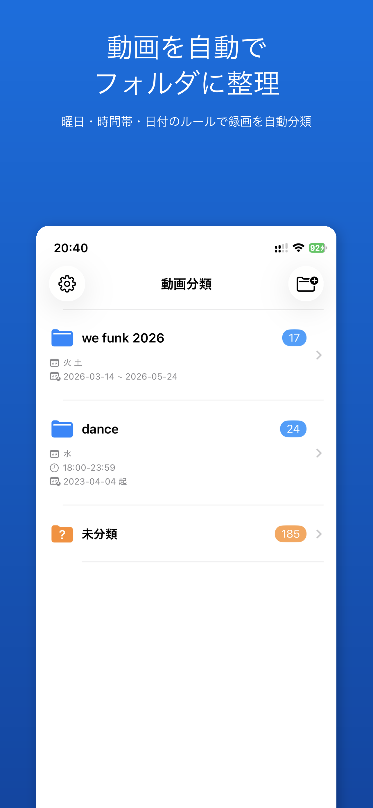
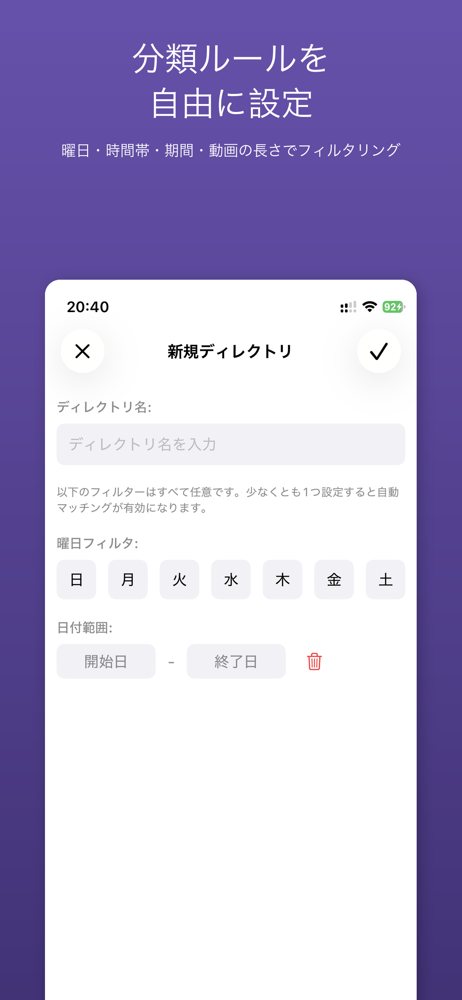
按日程自动分类你的视频
设置星期、时间段、日期范围和时长规则，视频整理自动从相册读取讲课录像并整理到对应文件夹。专为学生和教师设计。
通过星期、时间段、日期范围和视频时长定义规则，符合条件的视频自动归入对应文件夹。
创建自定义文件夹，手动选择要归入的视频。需要时可完全手动控制。
直接从相册读取视频元数据（创建日期、时长），无需导入或复制文件。
支持6种语言：英语、日语、韩语、简体中文、繁体中文和西班牙语。
所有处理均在设备上完成，视频数据绝不会被上传。应用仅读取元数据，你的视频始终保持私密。
在应用内直接观看和管理已分类的视频，无需切换其他应用。
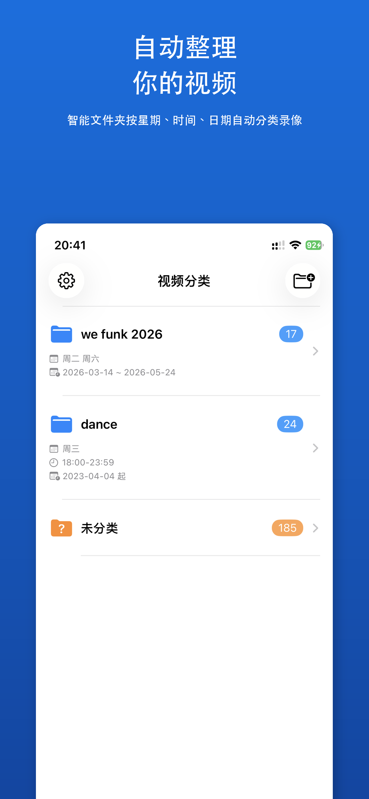
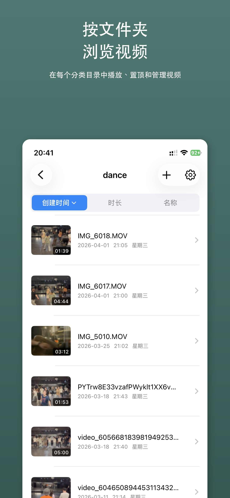
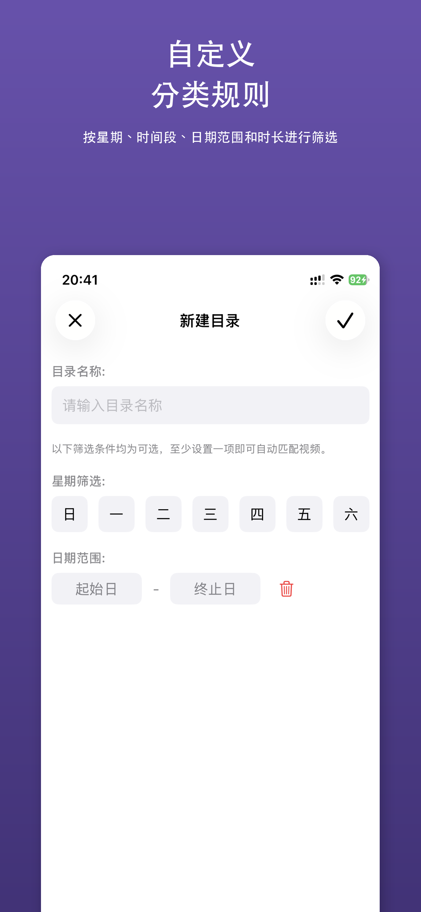
依照排程自動分類你的影片
設定星期、時段、日期範圍和時長規則，影片整理自動從相簿讀取授課錄影並整理到對應資料夾。專為學生和教師設計。
透過星期、時段、日期範圍和影片時長定義規則，符合條件的影片自動歸入對應資料夾。
建立自訂資料夾，手動選擇要歸入的影片。需要時可完全手動控制。
直接從相簿讀取影片元資料（建立日期、時長），無需匯入或複製檔案。
支援6種語言：英語、日語、韓語、簡體中文、繁體中文和西班牙語。
所有處理均在裝置上完成，影片資料絕不會被上傳。應用程式僅讀取元資料，你的影片始終保持私密。
在應用程式內直接觀看和管理已分類的影片，無需切換其他應用程式。
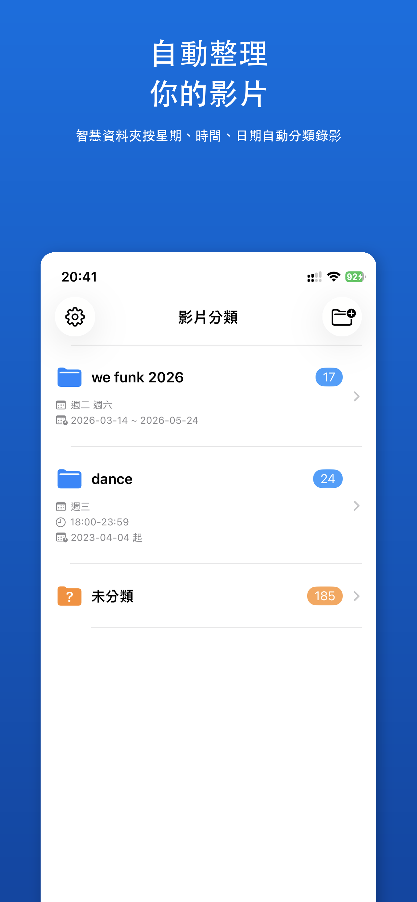
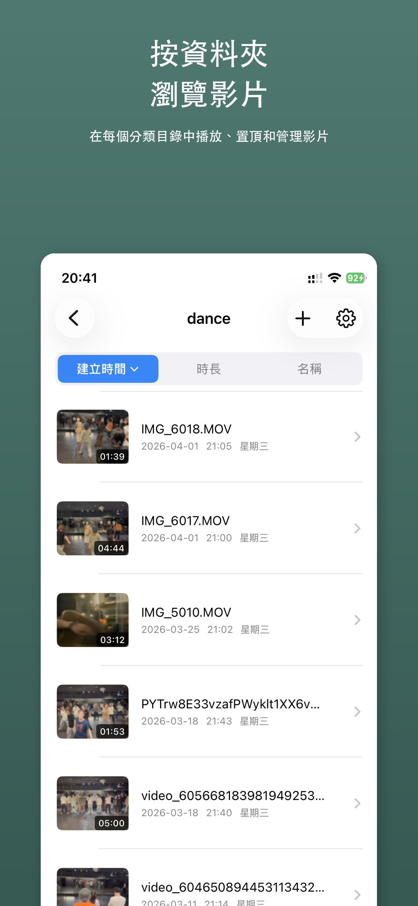
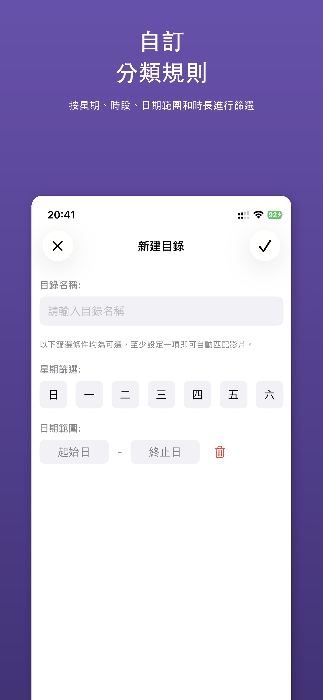
Clasifica tus videos automáticamente por horario
Define reglas por día de la semana, hora, rango de fechas y duración. Clasificador de Videos lee tu biblioteca de fotos y organiza las grabaciones de clases en carpetas automáticamente. Ideal para estudiantes y profesores.
Define reglas por día de la semana, rango horario, rango de fechas y duración. Los videos que cumplan los criterios se clasifican automáticamente en las carpetas correspondientes.
Crea carpetas personalizadas y selecciona manualmente qué videos van en cada una. Control total cuando lo necesites.
Lee los metadatos de video (fecha de creación, duración) directamente de tu biblioteca de fotos. Sin necesidad de importar o duplicar archivos.
Disponible en 6 idiomas: inglés, japonés, coreano, chino simplificado, chino tradicional y español.
Todo el procesamiento se realiza en tu dispositivo. Ningún dato de video se sube a la nube. La app solo lee metadatos — tus videos permanecen privados.
Mira y gestiona tus videos clasificados directamente dentro de la app. Sin necesidad de cambiar entre aplicaciones.
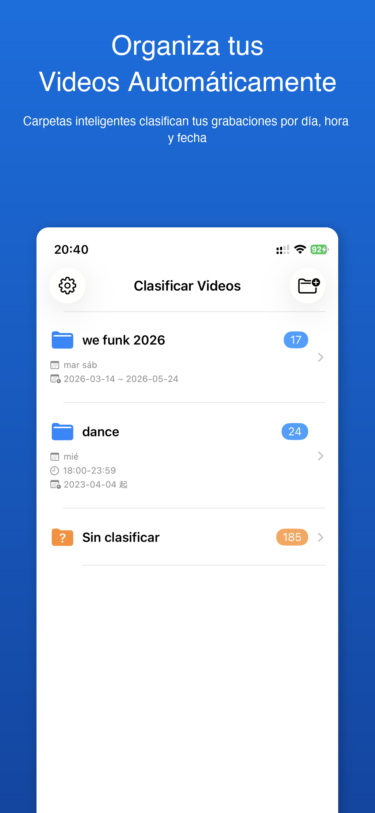
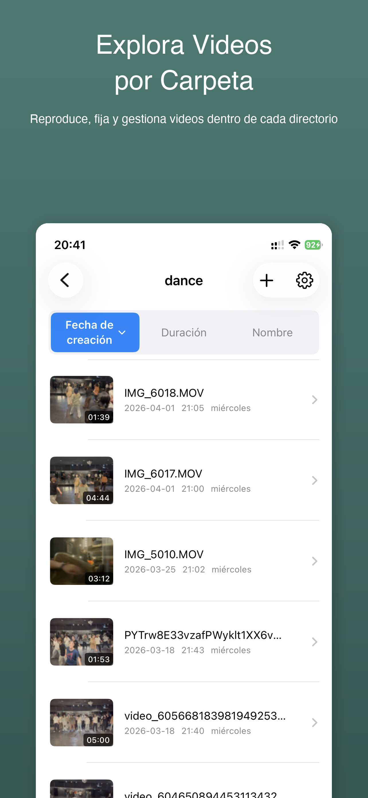
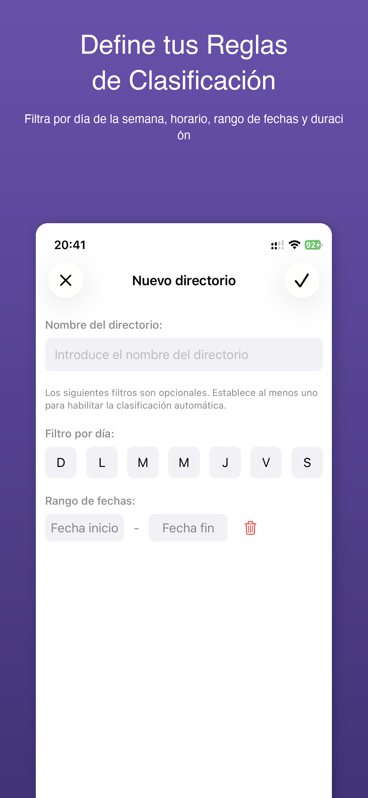
일정에 따라 동영상을 자동 분류
요일, 시간대, 날짜 범위, 영상 길이로 규칙을 설정하면 동영상 분류가 사진 라이브러리에서 강의 녹화를 자동으로 폴더에 정리합니다. 학생과 교사에게 최적입니다.
요일, 시간대, 날짜 범위, 영상 길이로 규칙을 정의하세요. 조건에 맞는 동영상이 자동으로 적절한 폴더에 분류됩니다.
맞춤 폴더를 만들고 동영상을 직접 선택하여 정리하세요. 필요할 때 완전한 제어가 가능합니다.
사진 라이브러리에서 동영상 메타데이터(생성 날짜, 길이)를 직접 읽어옵니다. 파일을 가져오거나 복제할 필요가 없습니다.
영어, 일본어, 한국어, 간체 중국어, 번체 중국어, 스페인어 등 6개 언어를 지원합니다.
모든 처리는 기기에서 이루어집니다. 동영상 데이터가 업로드되는 일은 없습니다. 앱은 메타데이터만 읽으며 동영상은 항상 비공개로 유지됩니다.
분류된 동영상을 앱 내에서 바로 시청하고 관리하세요. 다른 앱으로 전환할 필요가 없습니다.
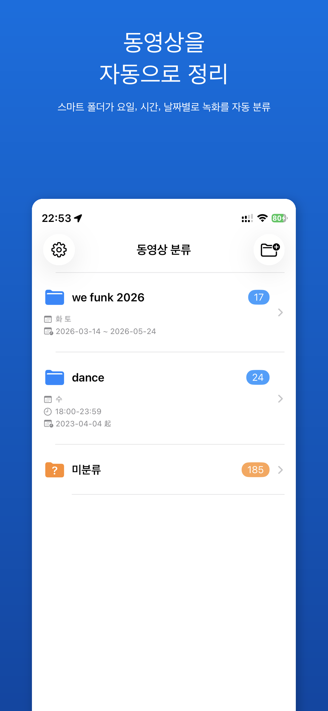
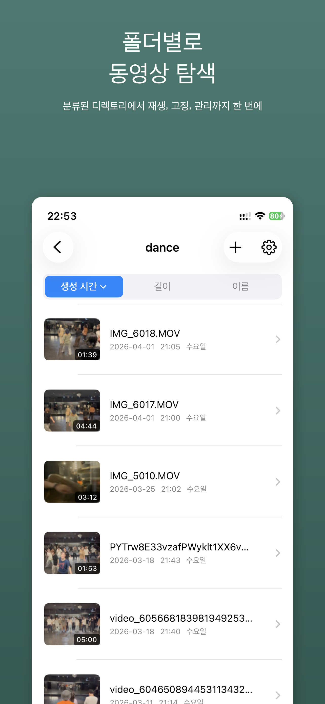
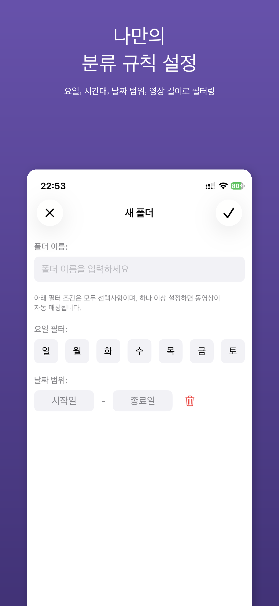